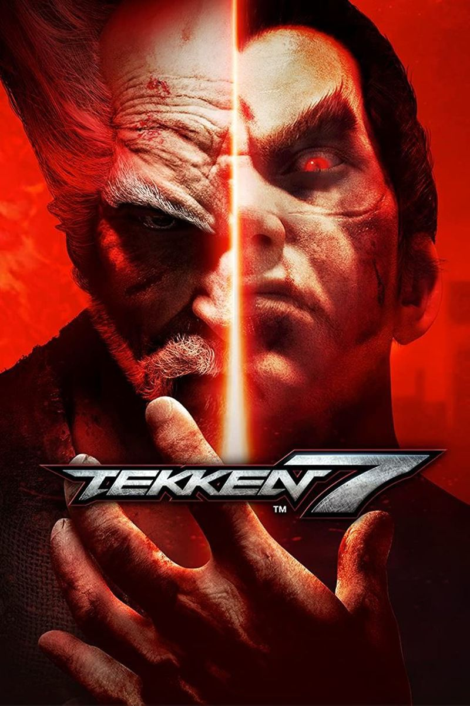
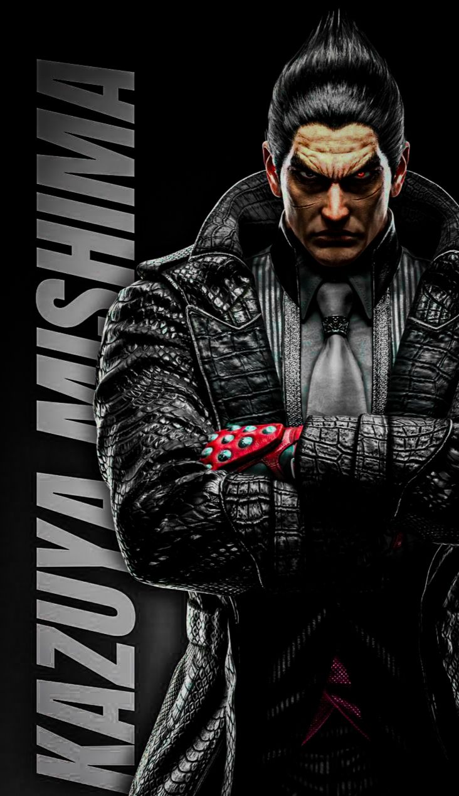
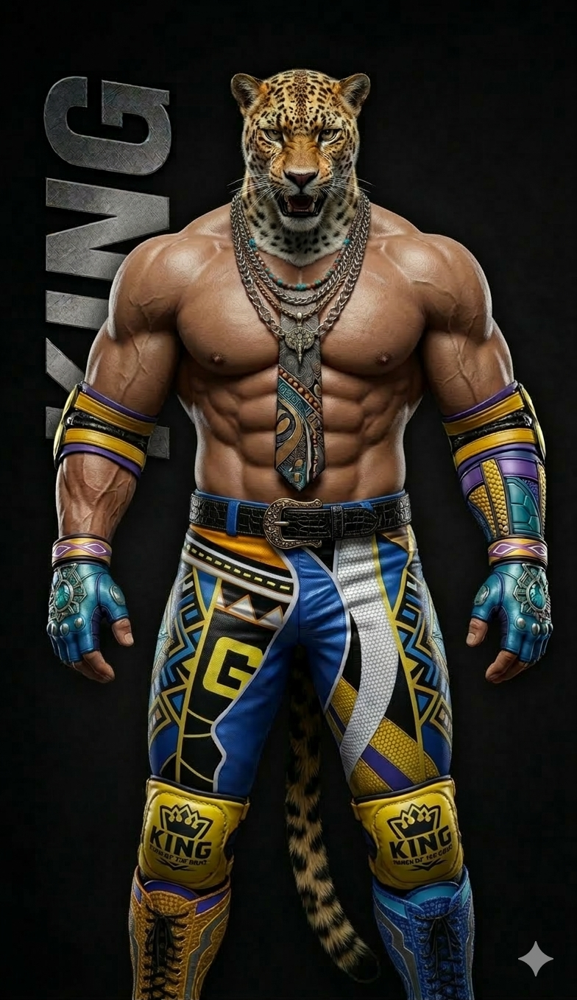
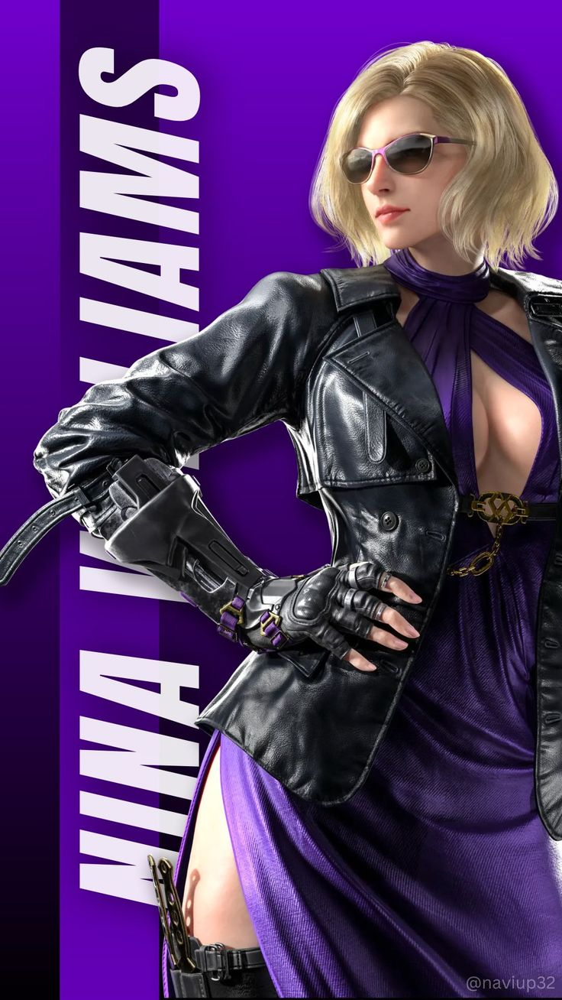

Sobre o Tekken 7
Lançado originalmente para fliperamas e posteriormente para consoles e PC, Tekken 7 é um dos jogos de luta mais aclamados da última década. Desenvolvido e publicado pela Bandai Namco Entertainment, o título marca o épico capítulo final da conturbada saga da família Mishima, resolvendo de vez a rivalidade histórica entre Heihachi e seu filho, Kazuya.
O jogo foi construído utilizando a poderosa Unreal Engine 4, o que garantiu gráficos impressionantes, texturas detalhadas e cenários dinâmicos que reagem aos impactos das lutas. Além de agradar os veteranos com a jogabilidade clássica em 3D, o jogo atraiu uma nova geração de jogadores ao simplificar algumas mecânicas de movimentação.

Novidades e Mecânicas
Para inovar a franquia, o jogo introduziu novas mecânicas como as Rage Arts (movimentos especiais cinematográficos que podem ser ativados quando a barra de vida está baixa) e os Power Crushes (ataques que absorvem dano médio e alto sem interromper o golpe do jogador). Isso tornou as partidas muito mais imprevisíveis e emocionantes de assistir.
Outro grande destaque do lançamento foi a introdução de lutadores convidados de outras franquias famosas, algo inédito nessa proporção na série. Entre os personagens mais marcantes que entraram no torneio King of Iron Fist, estão:
- Akuma (da franquia Street Fighter)
- Geese Howard (da franquia Fatal Fury/The King of Fighters)
- Noctis Lucis Caelum (de Final Fantasy XV)
- Negan (da série The Walking Dead)
- Leroy Smith (personagem original que quebrou a internet no lançamento)
O Impacto no Cenário Competitivo
Tekken 7 não foi apenas um sucesso de vendas, mas também revitalizou os esportes eletrônicos de luta através do circuito mundial Tekken World Tour. O jogo proporcionou momentos lendários em campeonatos como a EVO, onde jogadores de várias partes do mundo, como Coreia do Sul, Japão e Paquistão, mostraram níveis absurdos de habilidade técnica e reflexos.

Meu Top 3 Personagens
Com um elenco gigante, cada jogador tem seus favoritos. Aqui estão os meus três lutadores preferidos do Tekken 7:
1. Kazuya Mishima
O clássico antagonista. Seus combos exigem muita precisão, mas os danos devastadores e a habilidade de se transformar em Devil Kazuya compensam o esforço.

2. King
O icônico lutador com máscara de jaguar. Especialista em agarrões complexos (chain throws) que tiram muita vida do adversário se ele não souber escapar.

3. Nina Williams
A assassina letal. Uma personagem extremamente rápida e agressiva, perfeita para pressionar o oponente contra a parede e não deixar ele respirar.
